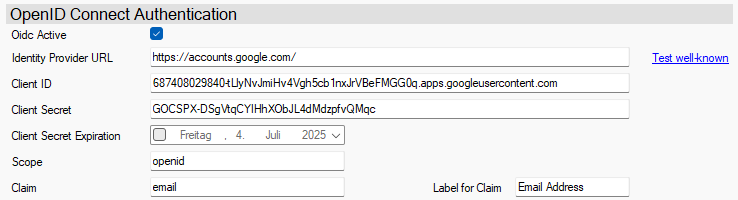

OpenID Connect mit Google
Google bietet eine kostenlose Möglichkeit, eine Benutzer-Authentifizierung mithilfe von OpenID Connect zu betreiben.
Note
Dieses Beispiel zeigt lediglich exemplarisch, dass auch andere Provider wie z.B. Google, Facebook oder Github verwendet werden können. Für den Einsatz im kommerziellen Betrieb - vor allem in größeren Unternehmen - wird die Verwendung von kommerziellen Lösungen wie Microsoft Entra ID oder Keycloak empfohlen.
Einrichtung
Die Authentifizierung ist für eigene Applikationen gedacht, die in Google erstellt und dort betrieben werden.
Jeder Google-Account besitzt ein kostenloses Kontingent. Das ist vollkommen ausreichend für Tests und kleinere Anwendungen.
Unter https://console.cloud.google.com/ können sie eigene Projekte erstellen und verwalten.
Erstellen sie zuerst ein neues Projekt. Verwenden sie dafür einen sprechenden Namen - dieser muss weltweit einmalig sein.
In diesem Projekt gehen sie in den Bereich Verwaltung / APIs und Dienste.
Dort in den Bereich Anmeldedaten.
+ Anmeldedaten erstellen / OAuth-Client-ID.
Wenn noch nicht geschehen, dann werden Sie dazu aufgefordert den Zustimmungsbildschirm zu konfigurieren. Dabei geht es darum, was dem Benutzer angezeigt werden soll, wenn später die Login-Seite von Google angezeigt wird. Folgen sie diesem Link und treffen die notwendigen Einstellungen.
Erneut + Anmeldedaten erstellen / OAuth-Client-ID aufrufen - jetzt kann die Client-ID erstellt werden.
- Anwendungs-Typ: Desktopanwendung
=> Dadurch wird authomatischhttp://localhostals Redirect-URL akzeptiert. - Beim Erstellen erhalten wird ein Dialog mit wichtigen Informationen angezeigt, die Sie für die Einrichtung des Authentication-Service benötigen.
- Client-ID
- Clientschlüssel - dieser muss in das Feld Client-Secret geschrieben werden.
Die Clientschlüssel haben bei Google kein Ablauf-Datum.
- Anwendungs-Typ: Desktopanwendung
Nachdem sie den Client erzeugt haben, können in Zielgruppe die Benutzer gepflegt werden.
Der eigene Benutzer kann sich immer an der "Test-App" anmelden. Sie können bei Bedarf weitere "Testnutzer" hinzufügen.
Durch eine Veröffentlichung gewährt Google ALLEN Google-Nutzern "zugriff" auf diese App. Das bedeutet, Sie können die Email-Adresse JEDES Google-Benutzers in der Runtime-Administration pflegen.
Eine Veröffentlichung beinhaltet ggf. auch eine Überprüfung der App durch Google. Sie können diese App im Test-Modus behalten und brauchen diese nicht zu veröffentlichen. In diesem Fall können und müssen Sie die zulässigen Testnutzer explizit pflegen.
Konfiguration im Authentication-Service
Im AuthenticationServiceConfigEditor müssen folgende Einstellungen getroffen werden.
- Identity Provider Url:
https://accounts.google.com/ - Client ID: die Client-ID der Google-App (siehe oben)
- Client Secret: der Clientschlüssel der Google-App (siehe oben)
- Client Secret Expiration: nicht angeben - Clientschlüssel haben bei Google kein Ablauf-Datum
- Scope:
openid - Claim:
email- damit wird die Email-Adresse des Google-Nutzers zur Identifikation verwendet
Das folgende Bild zeigt beispielhaft die Konfiguration eines Authentication-Service für Google:
